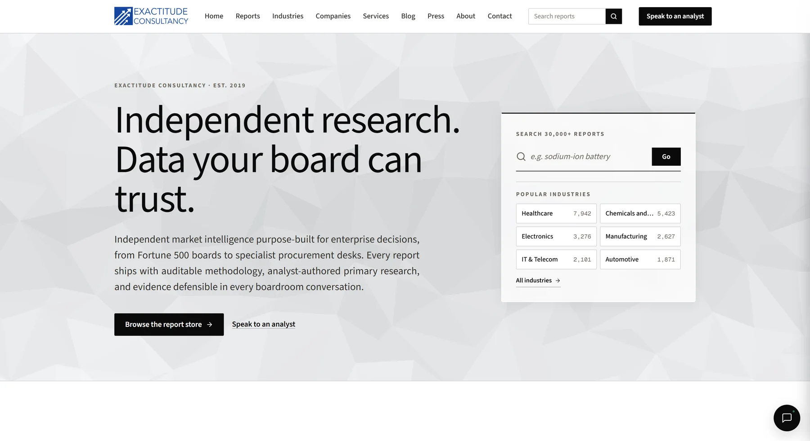
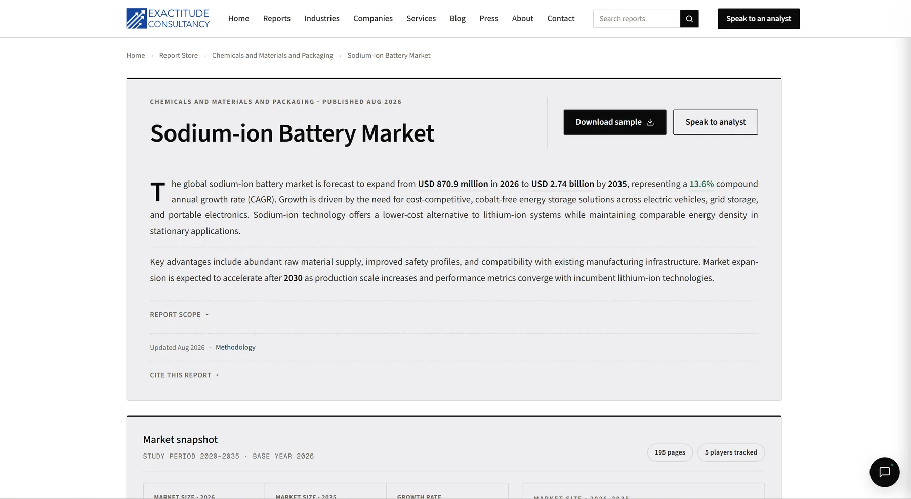
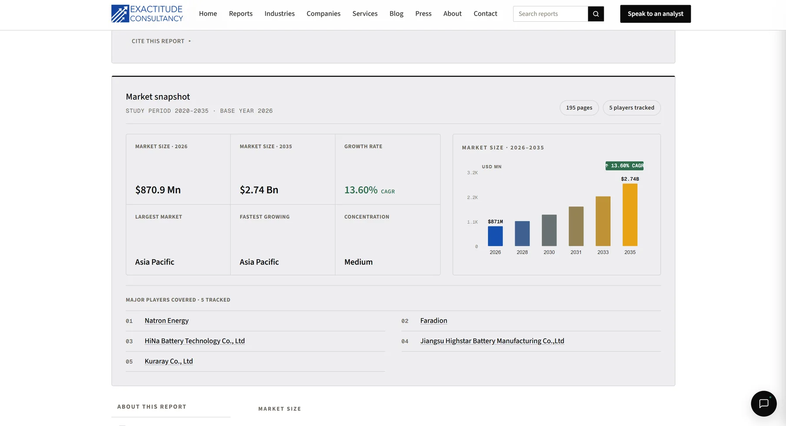
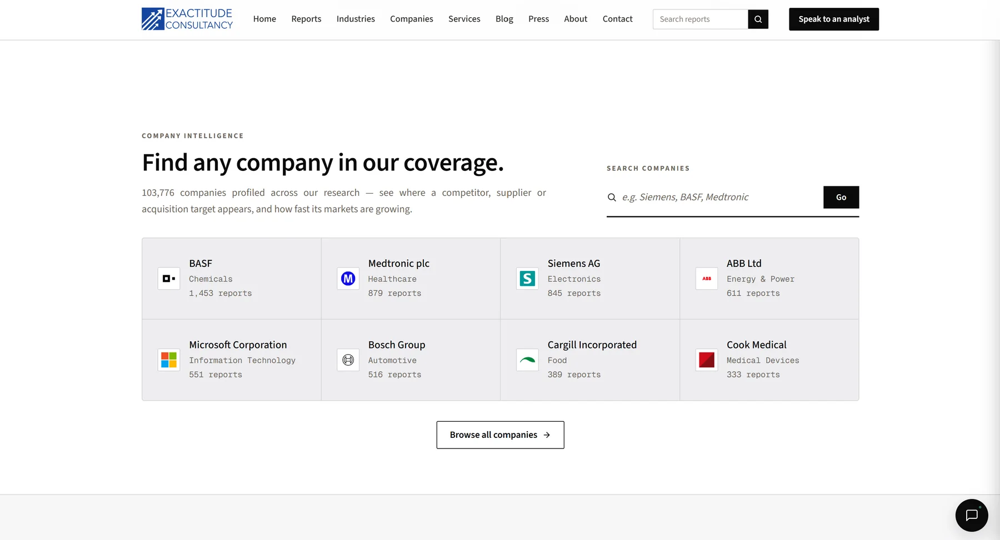

Screenshots




The situation
Exactitude Consultancy publishes around 30,000 industry reports. When I joined, four problems were hurting the business at once, and there was no budget for paid APIs.
- Untrustworthy numbers. Stale or inconsistent figures, wrong units, impossible growth rates and placeholder company lists.
- Slow pages. The homepage took almost a second to load.
- Lost leads. Enquiry e-mails had been failing silently for a month.
- Manual everything. Content, outreach and customer search were done by hand, on a small server under bot attack.
What I did
One principle ran through everything: Python does the work, AI only makes judgement calls, and a person approves anything that goes public. Every bulk change is backed up, checked on the live page and rolled back automatically if anything breaks.
Agents only ever create drafts. A dedicated database user can write to the draft tables and the blog/press tables — nothing else — so a misbehaving agent can't touch payments or accounts.
1. Verified market data at scale
- Crawled about one million report pages from research firms' public sitemaps, with no paid search API.
- Matched markets strictly (“spine surgery robots” is not “spine surgery”), extracted figures with regular expressions and converted everything to US dollars, catching million/billion mix-ups.
- Dropped any figure more than five times away from the median of other sources as a likely typo. AI was used for only about 5% of decisions, and two models had to agree.
- Logged every change with its source URLs so any batch can be rolled back. 22,000+ corrections went live, and 48.9% of reports are now cross-checked within 25% of published research.
Python handles the bulk of decisions; AI is reserved for judgement calls, and never gets the final word alone.
2. A company directory from official registers
- Built a 103,736-company directory from openFDA, GLEIF, Wikidata and NIH PubChem.
- An AI-suggested company is kept only if its source page names both the company and the product, and Python checks the page.
- Removed 3,845 wrong-industry companies, each confirmed by two AI models and the company's own website, and generated 50,840 company profiles from SQL templates instead of days of LLM calls.
3. Seven agents with a person in charge
- Seven coordinated agents (LangChain, LangGraph) for research, blog and press drafting, LinkedIn, segmented e-mail, prospecting, enrichment and quality checks.
- A weekly content pipeline (signals, topics, verified fact sheets, drafts) runs in about 6.5 minutes.
- Nothing publishes without approval in the admin panel, and agents write through a database user that cannot touch payments or accounts.
4. Pages from 909 ms to 1 ms
- Found that the page cache had never worked: PHP session headers on every page told Apache not to cache.
- Removed sessions from public pages, configured Apache's disk cache and sent proper headers so Cloudflare could cache at the edge. Homepage 909 to 1 ms, report pages 243 to 4 ms.
5. The month enquiry e-mails went silent
- About 70 enquiries were saved but never notified: the mail code called the site's own public URL, which Cloudflare's bot protection blocked.
- Switched to authenticated SMTP with delivery logs, confirmation e-mails, request IDs, a “track your request” page and an e-mail validity check.
6. Bot defence
- Custom Cloudflare WAF rules, user-agent blocks, rate limits and timeouts against AI scrapers and vulnerability scanners.
- 1.35 million of 17.6 million requests (8%) were flagged and blocked at the edge in 48 hours, protecting a two-core origin server.
7. A zero-cost AI and search layer
- Load-balanced ten free-tier LLM providers (including Gemini, Groq, NVIDIA NIM and Mistral) with 33 rotating keys and automatic failover.
- Ran crawling and search on up to 12 parallel GitHub Actions runners with time budgets and resumable checkpoints: 1,057 reports searched in about 15 minutes instead of more than four hours.
8. Admin access control
- Roles across 13 sections (none, view or edit), bcrypt passwords, an audit log and a guard that fails closed, covered by 42 automated tests.
Tech stack
| Backend | PHP 8, Apache 2.4 (mod_cache), MySQL 8 |
|---|---|
| Pipelines | Python 3 with regex extraction, concurrent workers and paramiko deploys; LangChain and LangGraph |
| Compute | GitHub Actions as a free fleet of up to 12 parallel workers |
| AI models | Claude Haiku and Sonnet for cited research; Groq, NVIDIA Nemotron and Gemini free tiers for second opinions |
| Data sources | openFDA, GLEIF, Wikidata, NIH PubChem, SEC EDGAR, Google Search Console |
| Edge and tooling | Cloudflare (CDN, WAF, caching), headless Chrome for page checks, PHPMailer, schema.org JSON-LD, IndexNow |
Impact
- Trust. 22,000+ figures corrected; chart-data mismatches on a verified sample fell from 39% to 0%; 168 reports with wrong headline figures fixed.
- Speed. Homepage 909 ms to 1 ms, report pages 243 ms to 4 ms, on the same server.
- Revenue. A month of lost enquiries recovered and the failure made impossible to repeat.
- Reach. Client outreach scaled ten times (100 to 1,000); manual customer search cut from about ten hours to about one.
- Cost. AI and data spend from an estimated $24,000 to $36,000 a year to about zero.
What I learned
- Make AI cite its evidence, then check it in code. Trust comes from verification, not from the model.
- Use deterministic code first and AI last. It is cheaper, faster and auditable.
- On a live site, every bulk change needs a backup, a render check and a one-command rollback.
- Measure before optimising: the 900 ms problem was one configuration detail.